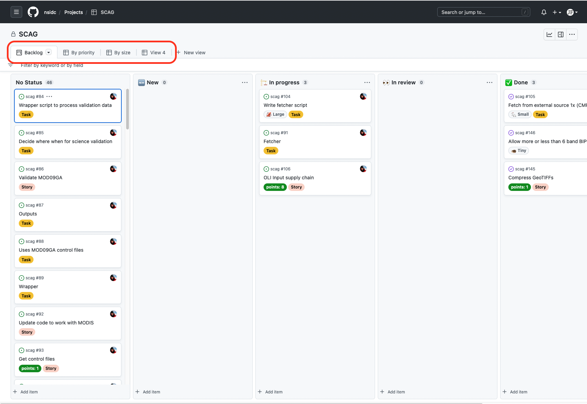
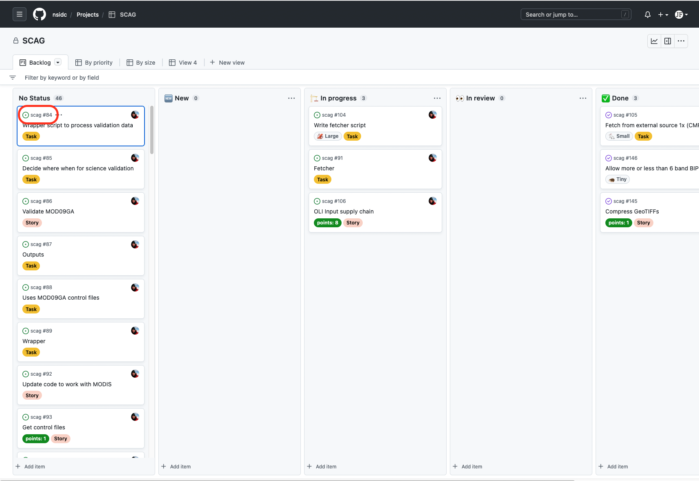

Project Management using GitHub
GitHub Structures
- User
- Organization
- Repository (repo)
- Issue
- Discussion
- Project
Repositories
Issues, Labels, and Milestones


Board View
Changing Views

Customizing Views

Table View
Repository and Issue Number

Custom Project Fields
- Text
- Number
- Date
- Single select list
- Iteration
Filtering Issues
Autosuggestion Filters

A Filtered View

Watching a Repo

Following an Issue
Accessing Notifications